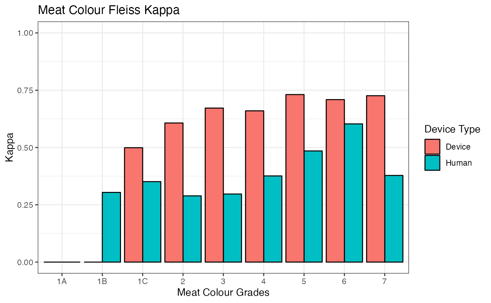

Technical
meatrics_methods.RmdFleiss Kappa
Note: an assumption of Fleiss Kappa may be violated in this particular case-study. Fleiss et al. (2003) states: “The raters responsible for rating one subject are not assumed to be the same as those responsible for rating another”. The dataset does not satisfy the assumption that the raters are randomly-selected from a larger population of raters.
Fleiss Kappa is an extension of Cohen’s Kappa, which assesses inter-rater reliability for three or more raters for categorical variables while factoring out agreement due to chance.
\[ \kappa = \frac{\bar{P}-\bar{P}_e}{1-\bar{P}_e} \]
\(\bar{P}\) is defined as the observed agreement, \(\bar{P}_e\) is the expected agreement if the ratings were completely random. Hence, the numerator is defined as the degree of agreement actually achieved above chance whereas the denominator is the degree of agreement that is attainable above chance.
fleiss_meat() reports on category-wise Fleiss Kappa,
which can be interpreted as the probability of a randomly chosen rater
assigning an item to a category, given another randomly chosen rater has
also assigned that item to the category. The formula for \(A_{k}\) , agreement in category \(k\) is:
\[ A_{k} = \frac{\sum_{i=1}^{n}r_{ik}(r_{ik}-1)}{\sum_{i=1}^{n}r_{ik}(r_{i}-1)} \]
\(r_{ik}\) is the number of graders who assigned item \(i\) to category \(k\) , \(r_{i}\) being the total number of ratings total and \(n\) being the number of items (assuming that each item has been rated by 2 or more graders).
In the context of our dataset, expert_graders, each item
\(i\) would be a body_no
and kill_date combination and \(k\) would be the available levels for that
categorical/discrete trait.
fleiss(expert_graders, device_status = FALSE, variable = "meat_colour")
This function has been extended to allow comparisons between device category-wise agreement and expert grader category–wise agreement.
fleiss(expert_graders, df2 = devices, device_status = FALSE, variable = "meat_colour")
ICC (Intra-class Correlation Coefficient)
The ICC is commonly used to describe how strongly units of the same group resemble one another. In that sense, it can also be seen as an assessment of rater agreement. To summarise, ICC can be considered as a ratio looking at the variance of interest divided by total variance. It is derived from
There are 10 different types of ICC and 6 defined by Shrout and Fleiss (1979). It is most relevant to consider the two-way mixed average score ICC (ICC3k) and the two-way mixed single-rater score (ICC3) for the purpose of this R package.
This is because the two-way mixed model defines there to be \(k\) fixed raters, in which each subject is measured by the \(k\) raters. The choice of reporting which specific type of ICC statistic is based upon the future intended usage of the rater. As it is unclear whether each rater will be rating by itself or if the average of all \(k\) raters will be taken as the final rating, meatrics reports on both ICC3 and ICC3k.
The formula for ICC(3, k) is:
\[ \frac{MS_{R}-MS_{E}}{MS_{R}} \]
In comparison, the formula for ICC(3, 1) is:
\[ \frac{MS_{R}-MS_{E}}{MS_{R} + (k-1)MS_{E}} \]
It can be noted that in the single-rater formula, it is adjusted for the fact that there is a common source of variability amongst each rater (\(MS_{E}\)).
# calculating icc across time of devices & expert graders
icc_line(expert_graders, df2 = devices, variable = "msa_marbling")CCC (Concordance Correlation Coefficient)
The Concordance Correlation Coefficient is another measure of inter-rater reliability. It combines measures of precision and accuracy to determine how far the data deviates from the perfect 45 degree line of concordance. Its formula is as follows and ranges from -1 to 1, much like Pearson’s correlation coefficient:
\[ \rho_c = \frac{2\rho\sigma_x\sigma_y}{\sigma_x^2+\sigma_y^2+(\mu_x-\mu_y)^2} \]
\(x\) and \(y\) represent the two graders of interest. The bias correction factor in the formula adjusts for bias in the measurements by subtracting the difference between the means of the two sets of measurements from the denominator. This ensures that the CCC is a more appropriate measure than Pearson’s when there is a systematic difference between the two graders.
References: